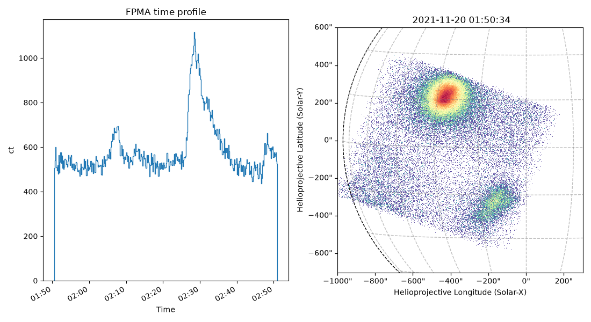
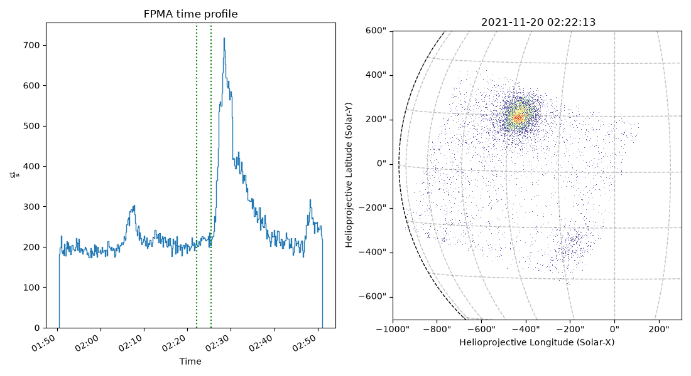

Note
Go to the end to download the full example code.
Full Analysis Pipeline
This example shows The full analysis pipeline.
The assumption is that the user already has the NuSTAR data analysis software downloaded; however, these lines will not be run here.
Instead, the lines of code will be shown then an example expected file will be downloaded from the example gallery. This way, I don’t have to get HEASoft working on a remote Github server (thank you) and the user will be able to see what type of files they should expect at each step.
Download the data
Let’s use the observataion ID 20619003001 for this example.
wget -q -nH --no-check-certificate --cut-dirs=6 -r -l0 -c -N -np -R 'index*' -erobots=off --retr-symlinks https://heasarc.gsfc.nasa.gov/FTP/nustar/data/obs/06/2//20619003001/
Unzipping
Then we can run the following on the downloaded folder to have access to the files.
gunzip -r 20619003001
Science files
Once the files are unzipped, nupipeline can be evoked to process
the files. This creates an event_cl folder mainly with the event
list files.
nupipeline obsmode=SCIENCE_SC indir=./20619003001 steminputs=nu20619003001 outdir=event_cl entrystage=1 exitstage=2 pntra=OBJECT pntdec=OBJECT statusexpr=STATUS==b0000xx00xx0xx000 cleanflick=no hkevtexpr=NONE clobber=yes runsplitsc=yes splitmode=STRICT
The main file this gives us access to here is the full observation EVT
file, for FPMA: nu20619003001A06_cl.evt.
We also have access to the housekeeping data such:
Livetime information in
nu20619003001A_fpm.hk(for FPMA)CHU information in
nu20619003001_chu123.fitsThe observation good time interval file in
nu20619003001A06_gti.fits(for FPMA)
The FPMB files are also produced.
import ntpath
import os
import urllib.request
from jdhsrpy import TEST_DATA_LOCATION
url = f"{TEST_DATA_LOCATION}/test_nustar_data/nu20619003001A06_cl.evt"
filename_base_evt = os.path.join(os.getcwd(), ntpath.split(url)[1])
if not os.path.isfile(filename_base_evt):
urllib.request.urlretrieve(url, filename_base_evt)
url = f"{TEST_DATA_LOCATION}/test_nustar_data/nu20619003001A_fpm.hk"
filename_lvt = os.path.join(os.getcwd(), ntpath.split(url)[1])
if not os.path.isfile(filename_lvt):
urllib.request.urlretrieve(url, filename_lvt)
url = f"{TEST_DATA_LOCATION}/test_nustar_data/nu20619003001_chu123.fits"
filename_chu = os.path.join(os.getcwd(), ntpath.split(url)[1])
if not os.path.isfile(filename_chu):
urllib.request.urlretrieve(url, filename_chu)
url = f"{TEST_DATA_LOCATION}/test_nustar_data/nu20619003001A06_gti.fits"
filename_base_gti = os.path.join(os.getcwd(), ntpath.split(url)[1])
if not os.path.isfile(filename_base_gti):
urllib.request.urlretrieve(url, filename_base_gti)
Grade 0
The next step is to filter the EVT file to only leave behind grade 0 events.
Making sure to be in the same directory of nu20619003001A06_cl.evt.
nuscreen infile=nu20619003001A06_cl.evt gtiscreen=no evtscreen=yes gtiexpr=NONE gradeexpr=0 statusexpr=NONE outdir=./ hkfile=./nu20619003001A_fpm.hk outfile=nu20619003001A06_cl_grade0.evt
This would produce a file called nu20619003001A06_cl_grade0.evt.
url = f"{TEST_DATA_LOCATION}/test_nustar_data/nu20619003001A06_cl_grade0.evt"
filename_g0_evt = os.path.join(os.getcwd(), ntpath.split(url)[1])
if not os.path.isfile(filename_g0_evt):
urllib.request.urlretrieve(url, filename_g0_evt)
To produce the FPMB files, the nuscreen function would need to be
run again with 20619003001A changed to 20619003001B.
EVT solar positions
For convenience, we can convert any of the EVT files so we can easily work in solar coordinates.
from jdhsrpy.nustar_evt import sunpos_evt
sunpos_evt(filename_base_evt)
The jdhsrpy.nustar_evt.sunpos_evt Python code has been skipped in
this example, and we will rely on the test, back-up data stored
elsewhere that would be produced by the above code.
url = f"{TEST_DATA_LOCATION}/test_nustar_data/nu20619003001A06_cl_sunpos.evt"
filename_sunpos_evt = os.path.join(os.getcwd(), ntpath.split(url)[1])
if not os.path.isfile(filename_sunpos_evt):
urllib.request.urlretrieve(url, filename_sunpos_evt)
This file can then be easily used with jdhsrpy.nustar_evt.NuSTAREvt.
import astropy.units as u
import matplotlib.dates as mdates
import matplotlib.pyplot as plt
from astropy.visualization import time_support
from matplotlib import gridspec
from jdhsrpy.nustar_evt import NustarEvt, draw_grid
from jdhsrpy.visualize import time_profile_plot
nustar_object = NustarEvt(evt_filename=filename_sunpos_evt)
# time profile numbers
times, counts = nustar_object.count_time_profile_array()
# image stuff
bottom_left = [-1000, -700] << u.arcsec
top_right = [300, 600] << u.arcsec
m = nustar_object.nustar_map(bottom_left, top_right)
# plot
time_support(format="unix_tai")
fig = plt.figure(figsize=(11, 6))
gs = gridspec.GridSpec(1, 2)
axes0 = fig.add_subplot(gs[0, 0])
axes = time_profile_plot(times, counts, axes=axes0)
axes0.set_title(f"FPM{nustar_object.fpm} time profile")
plt.xticks(rotation=30, ha="right")
axes0.set_ylabel(f"{counts.unit:latex}")
axes0.set_xlabel("Time")
fmt = mdates.DateFormatter("%H:%M")
axes0.xaxis.set_major_formatter(fmt)
plt.xticks(rotation=30)
axes1 = fig.add_subplot(gs[0, 1], projection=m)
m.plot(axes=axes1)
draw_grid(m, axes1)
plt.tight_layout()
plt.show()

GTI file
To obtain a good time interval (GTI) file, a user will likely want to inspect the NuSTAR time profile to select times.
We could use any EVT file together with ~jdhsrpy.nustar_evt.NustarEvt
for this. If none of them have been processed to convert their
X-Y coordinates to solar coordinated yet, we would just get a warning
from the class saying imaging methods probably will not work.
A user can then choose some times using the time profile plot.
from jdhsrpy.list_filters import by_time
from jdhsrpy.visualize import vertical_line_of_time
times, cts = nustar_object.rate_time_profile_array(filename_lvt)
time0 = "2021-11-20T02:22:10"
time1 = "2021-11-20T02:25:30"
m_tf = nustar_object.nustar_map(
bottom_left,
top_right,
event_data=by_time(nustar_object.cleaned_evt_data, time0, time1),
)
time_support(format="unix_tai")
fig = plt.figure(figsize=(11, 6))
gs = gridspec.GridSpec(1, 2)
axes0 = fig.add_subplot(gs[0, 0])
axes = time_profile_plot(times, cts, axes=axes0)
vertical_line_of_time(time0, c="g", axes=axes, ls=":")
vertical_line_of_time(time1, c="g", axes=axes, ls=":")
axes0.set_title(f"FPM{nustar_object.fpm} time profile")
plt.xticks(rotation=30, ha="right")
axes0.set_ylabel(f"{cts.unit:latex}")
axes0.set_xlabel("Time")
fmt = mdates.DateFormatter("%H:%M")
axes0.xaxis.set_major_formatter(fmt)
plt.xticks(rotation=30)
axes1 = fig.add_subplot(gs[0, 1], projection=m_tf)
m_tf.plot(axes=axes1)
draw_grid(m_tf, axes1)
plt.tight_layout()
plt.show()

A user should also inspect the livetime and CHU information. See the Plotting NuSTAR Time Profiles example.
From the time selection, two files should be produced. The first file
is the GTI file 2210_to_2530_gti.fits that can be used to further
process the NuSTAR data pipeline.
The second file is a time filtered EVT file so we can use that to select a good region in the next section.
Make sure this is the grade 0 EVT file
from jdhsrpy.screening import make_gti_file, time_filtered_evt_file
from jdhsrpy.utils import only_numbers
common_file_name = f"{only_numbers(time0)[-4:]}_to_{only_numbers(time1)[-4:]}"
make_gti_file(
filename_base_gti,
save_name=f"{common_file_name}_gti.fits",
good_time_interval=[time0, time1],
overwrite=True,
)
time_filtered_evt_file(
evt_file=filename_g0_evt,
save_name=f"{common_file_name}_20619003001A_tf.evt",
time_range=[time0, time1],
overwrite=True,
)
The time-filtering Python code has been skipped in this example,
and we will rely on the test, back-up data stored elsewhere that would
be produced by the above code.
url = f"{TEST_DATA_LOCATION}/test_nustar_data/2210_to_2530_gti.fits"
filename_gti = os.path.join(os.getcwd(), ntpath.split(url)[1])
if not os.path.isfile(filename_gti):
urllib.request.urlretrieve(url, filename_gti)
url = f"{TEST_DATA_LOCATION}/test_nustar_data/2210_to_2530_20619003001A_tf.evt"
filename_tf_evt = os.path.join(os.getcwd(), ntpath.split(url)[1])
if not os.path.isfile(filename_tf_evt):
urllib.request.urlretrieve(url, filename_tf_evt)
Region file
To obtain a region file, take the new time filtered grade 0 file and use FITS viewing software like SAOImageDS9.
In SAOImageDS9, a user can select edit in the GUI window, then
region, then draw a region with their mouse.
Once the user is happy with their region, they can go to region
and click on save. They can choose where to save the region file.
Note, there might be another window that pops up after you click save,
just make sure to click OK on this window too otherwise the file
will not save.
url = f"{TEST_DATA_LOCATION}/test_nustar_data/fpma.reg"
filename_reg = os.path.join(os.getcwd(), ntpath.split(url)[1])
if not os.path.isfile(filename_reg):
urllib.request.urlretrieve(url, filename_reg)
Spectral files
Once the good time interval file and region file are obtain, we can produce the spectral files: PHA, ARF, and RMF.
Making sure to be in the same directory of nu20619003001A06_cl_grade0.evt.
nuproducts indir=./ instrument=FPMA steminputs=nu20619003001 outdir=./ extended=no runmkarf=yes runmkrmf=yes infile=nu20619003001A06_cl_grade0.evt bkgextract=no srcregionfile=fpma.reg attfile=./nu20619003001_att.fits hkfile=./nu20619003001A_fpm.hk usrgtifile=2210_to_2530_gti.fits
url = f"{TEST_DATA_LOCATION}/test_nustar_data/nu20619003001A06_cl_grade0_sr.pha"
filename_pha = os.path.join(os.getcwd(), ntpath.split(url)[1])
if not os.path.isfile(filename_pha):
urllib.request.urlretrieve(url, filename_pha)
url = f"{TEST_DATA_LOCATION}/test_nustar_data/nu20619003001A06_cl_grade0_sr.arf"
filename_arf = os.path.join(os.getcwd(), ntpath.split(url)[1])
if not os.path.isfile(filename_arf):
urllib.request.urlretrieve(url, filename_arf)
url = f"{TEST_DATA_LOCATION}/test_nustar_data/nu20619003001A06_cl_grade0_sr.rmf"
filename_rmf = os.path.join(os.getcwd(), ntpath.split(url)[1])
if not os.path.isfile(filename_rmf):
urllib.request.urlretrieve(url, filename_rmf)
To produce the FPMB files, the nuscreen function would need to be
run again with FPMA changed to FPMB, 20619003001A
changed to 20619003001B.
This will likely mean a different region file for FPMB, and potentially a different GTI file also.
Total running time of the script: (0 minutes 6.159 seconds)